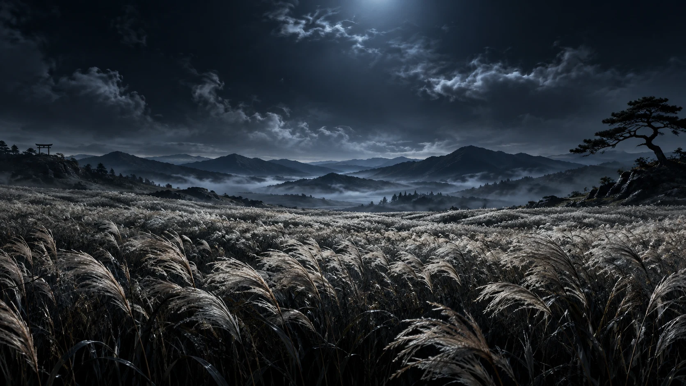

Независимый концепт
RusJet
Авиационный сайт с реальной съёмкой и переходами, которые связаны с прокруткой.
Личное портфолио
Делаю сайты, приложения и интерактивные истории.


Независимый концепт
Авиационный сайт с реальной съёмкой и переходами, которые связаны с прокруткой.

Командный учебный проект
Двенадцать глав об истории Сочи. Архивные кадры, карты и сравнения «тогда и сейчас».

Сервис онлайн-записи
Объединил запись, расписание и уведомления в одном сервисе для мастеров и преподавателей.
Учусь на бизнес-информатике в НИУ ВШЭ. Делаю сайты на React и Next.js, приложения на React Native и Expo, ботов на Python.
«Лекторий» делаю вместе с Владиком. «Хроносфера» — командный учебный проект. В разработке использую AI и проверяю полученный результат.
Образование, стек и подход